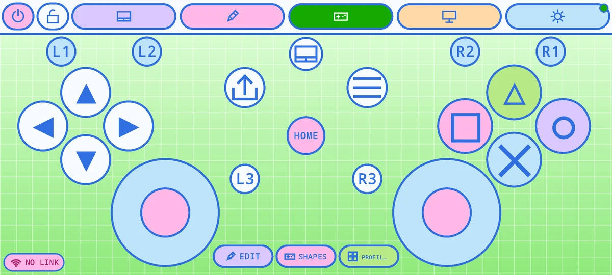
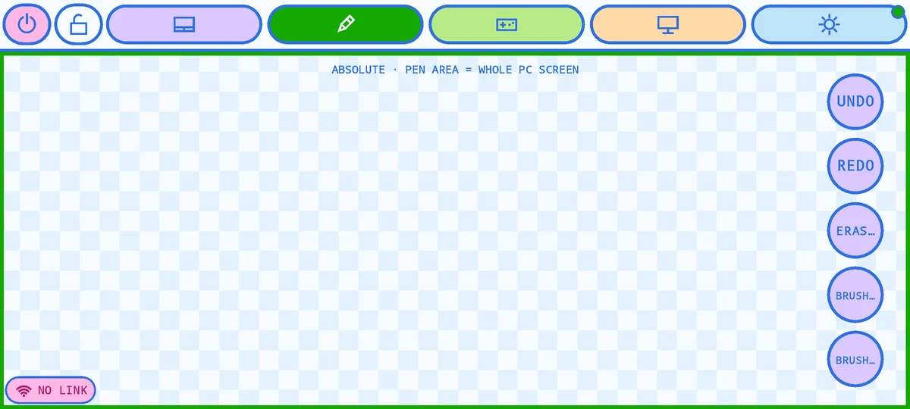
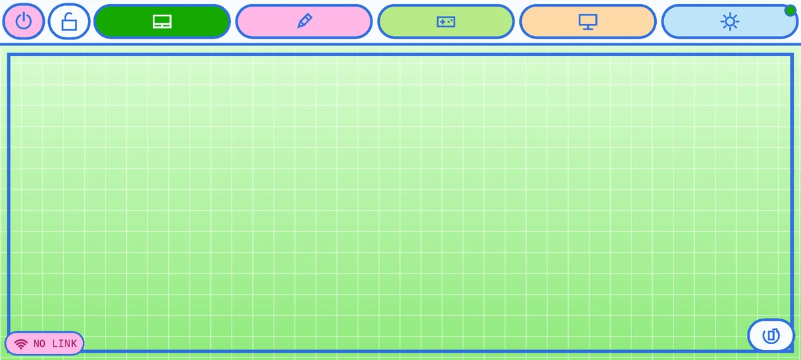
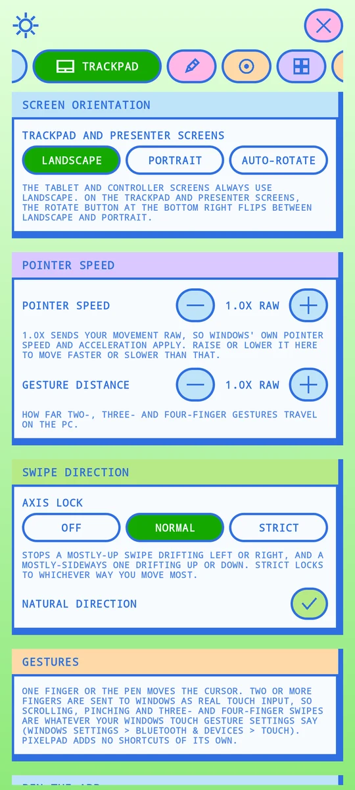

Your tablet or phone, as a pen tablet, trackpad and game controller for your PC.
PixelPad is a free Android app. With PixelPad Desk on your Windows PC, the pen shows up as a real pen (pressure, tilt, hover and eraser), your fingers become real touch, and the screen turns into up to four game controllers.
Android 7.0 or newer. Free. No account, no ads, no tracking.

How it works
Install PixelPad Desk
On your Windows PC. It sits in the tray and shows a QR code.
Install PixelPad
On your tablet or phone, from the download below. Open it and scan the QR code once.
Use it
Over Wi-Fi, or a USB cable. If your Wi-Fi changes, the app finds your PC again by itself: no new scan.
Pen
A real Windows pen: pressure, tilt, hover and eraser. Draw in any app that takes a pen. Palm rejection included.
Trackpad
One finger moves the cursor. Two or more fingers are real touch, so Windows' own gestures work as you have them set up.
Controller
Five layouts that you can move, resize and hide, saved as profiles on the PC and linked to your Steam games. Up to four devices, four players.
Presenter
Previous and next buttons for your slides and a pointer area. The volume keys turn slides too.
A look at the app



Download for Android
Download PixelPad 1.5.0 (APK)1.0 MB · Android 7.0+
| Version | 1.5.0 (2026-10-20) |
| File | PixelPad-1.5.0.apk |
| SHA-256 of the file | bb0c6d4899734a9c0491ec905d640d0a33aa7c62ef20607f0ab64620b873aa2b |
| Signing certificate (SHA-256) | ba9687d4adb085762d8aa96187774cea3b3799dd7ec21d389e7f113b2b5344b9 |
Install it
- Download the file on the device you want to use it on.
- Open it. Android asks to allow installs from your browser or files app: allow it for this one install (you can turn it off after).
- Android may say it can't check the app because it isn't from the Play Store. That is true: choose Install anyway (or More details, then Install anyway). Compare the SHA-256 above with your download first if you like.
- Open PixelPad. The first screen lets you scan the QR code on your PC.
Updates arrive from this page: the app tells you when a newer version is out and installs it after you confirm. Installing over an older copy needs it to be signed with the same key, so if you have a build from before 1.5.0 that wasn't from this page, uninstall it first (this clears its saved PCs).
PixelPad Desk for Windows
The PC side. It receives what the app sends and turns it into a pen, touch, keys and a controller. Windows 10 (version 1809) or 11, 64-bit.
| SHA-256 of the file | 91c3a8a86c57a55c59229c64b2d954f1f930cef2de529218f9515079fa464dec |
| Controller mode | Needs the free ViGEmBus driver. The Steam version brings it along; with the direct download, install it from its own releases page. Pen, trackpad and presenter modes don't need it. |
The exe isn't code-signed yet, so Windows SmartScreen may say "unknown publisher": choose More info, then Run anyway. Allow it through Windows Firewall on private networks when asked, so your device can reach it.
Safe by design
- Only your device can drive your PC. The QR code carries a secret pairing key. Every packet is signed and encrypted with it, with replay protection, over Wi-Fi, Bluetooth tethering and USB.
- Nothing leaves your network. The app talks to your PC and nowhere else. The only internet request is the check for a newer version.
- No account, no ads, no analytics, no crash reporting. This page has no cookies and loads nothing from other sites.
Read the privacy policy and the licences of everything inside.